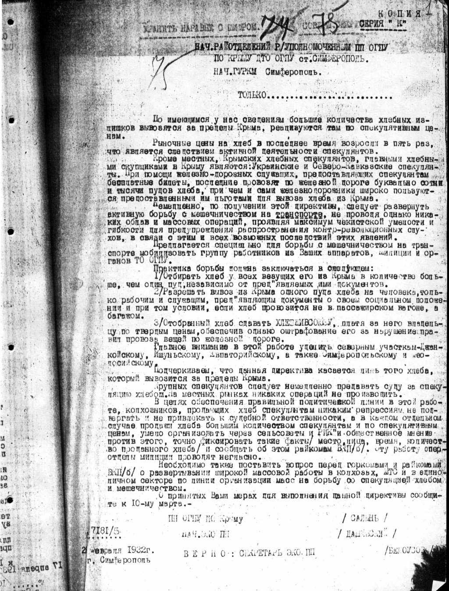

Андрей Борцов (Warrax)
Голод или голодовка?
|
Я согласен с французским историком Николя Вертом, что смерть еврейского мальчика в гетто и смерть украинского ребенка в селе — явления одного порядка. Руководитель Центра исследования геноцида
украинского народа |
Честно говоря, я не собирался когда-либо писать отдельную работу по теме так называемого голодомора. Была мысль написать про «украинский национализм». Однако вопрос заслуживает отдельного внимания.
Так, 28 ноября 2006 года Верховная Рада Украины приняла закон «О голодоморе 1932-1933 годов на территории Украины», внесенный президентом страны Виктором Ющенко. Законопроект, приравнивающий трагические события 30-х годов к «геноциду украинского народа», принят большинством в 233 голоса из 423 присутствовавших в зале депутатов. Правда, с некоторыми поправками.
В проекте закона присутствовали ключевые моменты:
• признание голодомора геноцидом;
• признанием голодомора геноцидом украинской нации;
• введение административной ответственности за отрицание Голодомора;
• организация института истории Голодомора (то есть — выделение денег на таковой).
В результате признание голодомора геноцидом — реализовано, а вот с признанием голодомора геноцидом украинской нации вышла небольшая неувязочка. Признание прошло, но под украинским народом признали граждан Украины всех национальностей. Публичное отрицание же голодомора признано противоправным, но (пока?) без каких-либо санкций.
Примечание: не надо думать, что, если Партия Регионов не поддержала голосованием президентский проект, то она выступает против сути такового. У нее просто свое видение вопроса:
«Заместитель председателя парламентской фракции Партии регионов Евгений Кушнарёв считает, что в законе о признании Голодомора 1932-1933 годов нецелесообразно предусматривать административную или уголовную ответственность за высказывания, отрицающие существование в Украине Голодомора. ... Кушнарёв отметил, что фракция против использования в вопросе Голодомора 1932-1933 годов термина геноцид. По его словам, геноцид — это явление, когда уничтожаются люди по национальному, расовому или религиозному признаку. Он считает, что в Украине было уничтожение людей разных национальностей и различных вероисповеданий. По словам депутата, речь идет о “преступлении сталинского режима против людей”. Кушнарёв подчеркнул, что фракция поддержит собственный законопроект, а не президентский. ..
17 ноября трое депутатов из фракции Партии регионов подали собственный законопроект “О Голодоморе 1932-1933 годов в Украине”. Согласно этому проекту, “Голодомор 1932-1933 годов в Украине является преступлением сталинского режима против человечества, национальной трагедией украинского народа” и “Публичное отрицание Голодомора 1932-1933 годов в Украине является надругательством над памятью миллионов жертв Голодомора, унижением достоинства Украинского народа”».
На эту возню обратили внимание в МИД РФ:
«В украинской прессе продолжается обсуждение “голодомора” 1932-33 годов. При этом нередко выдвигается тезис, что голод того периода был не просто преднамеренно спровоцирован руководством СССР, но и направлен исключительно против украинского народа.
В этой связи российский МИД распространил сообщение, в котором подчеркивает: “Имеющиеся на этот счет архивные материалы свидетельствуют, что массовый голод начала 30-х годов действительно был во многом обусловлен политикой тогдашнего руководства Советского Союза. Однако, совершенно очевидно, что проводилась она не по национальному признаку. Всем нам следовало бы более взвешенно относиться к таким сложным и болезненным вопросам нашей совместной истории, не допускать их политизации”.
Напомним, что в 2003 году на 58-й сессии Генеральной ассамблеи ООН большинство стран — участниц СНГ, в том числе Украина и Россия, а также многие другие государства приняли совместное заявление, в котором выразили глубокое сочувствие миллионам украинцев, русских, казахов и представителей других народов, ставших жертвами голода тех лет. “При всем трагизме тогдашних событий нет оснований определять случившееся как геноцид по этническому признаку. Данное заявление было распространено в качестве официального документа ООН”.»
Российский МИД сделал заявление не случайно. Позиция МИД Украины, высказанная министром Борисом Тарасюком: «Если Россия будет придерживаться позиций, высказанных в заявлениях ее МИДа, что увековечивание памяти жертв голодомора является антироссийской кампанией, то мы не сможем найти взаимопонимания. Такая трактовка голодомора — это абсурд и неуважение к страданиям украинского народа. Украина не ставит перед собой цель привлечения к персональной ответственности тех или иных лиц в России, однако мы также не можем пренебрегать памятью 7-10 млн невинных жертв — наших отцов и дедов» (запомните число, чуть позже мы к нему вернемся).
«Наша Украина» также выступила с заявлением: «...предвзятое и зацикленное внимание государственного учреждения дружественного и соседнего государства к теме голодомора 30-х годов прошлого столетия как формы геноцида против Украинского народа является негуманным и вредным для гармонизации украинско-российских взаимоотношений. ... в геноциде против Украинского народа 30-х годов прошлого столетия виновны не россияне, а тоталитарная машина советской империи». Запомните и этот тезис, а пока обратим внимание на некоторые дополнительные факты.
Около половины жителей Украины (45,2%) не склонны считать, что голодомор 1932-33 гг. власть того времени организовала специально. При этом на востоке страны такое мнение разделяют почти две трети респондентов (66,9%), а по возрастным категориям наибольшая часть придерживающихся этой точки зрения украинцев находится в возрасте от 60 лет и старше — (52,3%). Таковы данные общеукраинского исследования «Мысли населения Украины про голодомор 1932-33 гг.», результаты которого были обнародованы Киевским международным институтом социологии 9 ноября. Среди тех, кто считает, что власть организовала голод 1932-33 гг. специально, только около четверти респондентов (26%) считает, что этот голод был направлен лишь против украинцев по национальности.
Интересно. Обратите внимание, что мнение «голодомор был» имеется в основном на Западной Украине, издавна склонной к русофобии. Не менее характерно и то, что отрицают голодомор большинство пожилых респондентов. Те, кому сейчас за 60, как раз являются детьми тех, кто застал голодомор лично, т.е. по рассказам родителей они должны знать об этом времени куда больше, чем более молодые слои населения. Однако именно они не считают, что украинцев морили голодом специально. Sapienti sat.
Депутаты Крыма заявили, что «в 1932-33 гг. голодомора в Крыму не было». На что официальный Киев пожал плечами и согласился: «Действительно, согласно данным Государственного архива Автономной Республики Крым и архива Службы безопасности Украины Автономной Республики Крым, голодомора в Крыму не было. В 1933 году крымчане собрали небывалый урожай, и за высокие показатели в сельском хозяйстве Крымская Автономная Советская Социалистическая Республика была награждена Орденом Ленина». Но тут же дал ценные указания: «Во-первых, крымские депутаты должны быть солидарны с народом Украины и поддержать обращение к Верховной раде Украины относительно признания голодомора 1932-33 годов актом геноцида против украинского народа. Во-вторых, Крым пережил свой голодомор 1921-1923 гг.».
Как вам такая логика? Конечно, не было; но надо поддержать, что было!
Со своей поддержкой выступила Польша: «”Жечпосполита” отмечает, что польское предложение — это ответ на призыв президента Украины Виктора Ющенко, который говорил о необходимости признать голодомор преступлением против человечества. На сегодня, кроме Украины и Польши, это сделали уже 26 стран. Также Шиманский подчеркивает, что поляки в Европарламенте приложат все силы, чтобы евродепутати узнали, чем был Голодомор.». Также «Ізраїль визнає Голодомор в Україні геноцидом».
Стремление продвинуть т.н. голодомор привело украинские власти чуть ли не к подлогу международных документов, читайте Ю. Соломатина «Как фальсифицировали миф о Голодоморе на уровне документов ООН?»:
«В преамбуле к законопроекту [который сейчас уже принят] есть ссылка на официальный документ 58-й сессии Генеральной Ассамблеи ООН «Совместное заявление по случаю 70-й годовщины Голодомора — Великого голода 1932-1933 годов в Украине», которое подписали более трех десятков государств — членов ООН. В действительности, в официальных документах ООН речь шла совсем о другом. ...
...вместо Резолюции Генеральной Ассамблеи ООН было принято всего лишь “Совместное заявление делегаций... по случаю семидесятой годовщины Голодомора — Великого голода 1932-1933 годов в Украине” (русскоязычная версия документа А/С.3/58/9 Третьего Комитета).
Уровень этого документа по своей значимости сродни депутатскому обращению или заявлению ... так сказать, для информации, еще грубее — для выпускания пара у чрезвычайно, до неприличия активных в проталкивании своей отдельной точки зрения. В тщательно отредактированном официальном англоязычном документе, совместном заявлении, неслучайно и упоминания о геноциде нет, а говорится о “национальной трагедии для украинского народа”.
Существенно то, что на английском языке, основном официальном языке ООН для документирования ее деятельности, что фиксируется на документах пометкой official-English, содержательная часть заявления обозначена так (цитирую): on the seventieth anniversary of the Great Famine of 1932-1933 in the Ukraine (Holodomor)! Именно так же сформулирована эта часть названия заявления в франкоязычной, испаноязычной версиях документа, в чем может убедиться каждый желающий на официальном сайте ООН.
Кто хотя бы чуть-чуть знает английский язык, сразу уловит разницу: для англоязычного читателя, то есть дипломатов, специалистов и просто англоязычных читателей всего мира, кроме постсоветского пространства, речь идет, прежде всего, про Great Famine — великий голод, а в скобках в английской транскрипции это еще какой-то непонятный Голодомор (Holodomor). На всякий случай это украинское слово даже в скобки поставлено. Вечно эти украинцы что-то свое придумают или напутают... «Придумали» и в русскоязычной версии названного заявления, поменяв местами Великий голод (Голодомор) на Голодомор — Великий голод. Ведь это как раз тот случай, когда от перемены мест слагаемых меняется сумма, то есть содержательная часть определения! А это уже есть махинации с документом official-English на государственном уровне!
Вышел откровенный дипломатический провал! Гора родила мышь... А для того чтобы хоть частично его скрасить, в русскоязычной неофициальной версии официального документа некие безответственные лица, которые его редактировали, написали, переставив слова, про Голодомор — Великий голод 1932-1933 годов в Украине. ...
А вот в материалах для украинских СМИ, предложенных на брифингах МИДа Украины 11, 18 и 25 ноября 2003 года, вообще говорится уже только про 70-ую годовщину Голодомора! Вот как это было представлено в названиях материалов брифингов:
11.11.2003 “Щодо відзначення в рамках ООН 70-ї річниці Голодомору в Україні”;
18.11.2003 “Про заходи, що відбулися у світі з метою вшанування жертв Голодомору в Україні в 1932-33 роках”;
25.11.2003 “Щодо заходів з відзначення у світі 70-ї річниці Голодомору в Україні 1932-33 років”.
Уловите очередной нюанс, как с подачи отечественного МИДа элегантно вообще исчезла первая, основная часть определения сути документа ООН — “Великий голод”!
Так состоялась официальная (с украинской стороны) фальсификация сути официального документа ООН! Именно эта сфальсифицированная на брифингах МИДа Украины интерпретация совместного заявления пошла гулять в украинских СМИ как якобы свидетельство официальной поддержки ООН (...чуть ли не на уровне декларации!) позиции Украины по Голодомору 1932-1933 годов.»
Ну очень хочется протолкнуть т.н. голодомор на международный уровень!
Вопрос «зачем» оставим напоследок, а сейчас озаботимся другим — «что есть голодомор». В свежепринятом законе (закон, а не хухры-мухры!) голодомор признан геноцидом украинской нации. Характерно, что термин «геноцид», существующий в русском языке, неприменим в данном случае никоим образом, так как обозначает «сознательное уничтожение по расовому, этническому или религиозному признаку». Даже если принять сознательность за постулат, то украинцы однозначно не являются расой. Являются украинцы (именно все) отдельным этносом? Чтобы сэкономить время от излишних споров, сразу вспомним, что в этом самом законе говорится про «граждан Украины», а не про этнических украинцев. Так что опять мимо... Не возьмусь утверждать, что «украинство» — это религия, но пропихивается голодомор с настойчивостью религиозных фанатиков. Да и все: кроме религии, других критериев для геноцида не осталось...
Забавный такой закон — самопротиворечивый в главном тезисе.
Впрочем, не будем отвлекаться на лингвистические тонкости — вполне вероятно, что на сучукрмове (современный украинский язык — укр.совр.) термин «геноцид» имеет значение, принципиально отличающееся от конвенциального в других языках. Давайте посмотрим на гипотезу голодомора поближе.
Для начала: сколько погибло-то? Согласитесь, важный вопрос.
 Напоминаю,
что украинский министр Б. Тарасюк, возмущаясь реакцией МИДа РФ, упоминал про
«7-10 млн невинных жертв».
Напоминаю,
что украинский министр Б. Тарасюк, возмущаясь реакцией МИДа РФ, упоминал про
«7-10 млн невинных жертв».
Размах! Недаром есть поговорка «где хохол прошел, еврею делать нечего». Это вам не какие-то шесть миллионов, а в полтора раза больше. Приблизительно, конечно, с точностью до трех миллионов, но это ведь мелочь, не так ли?
Не менее интересно то, что даже известный пропагандист теории, историк С.В. Кульчицкий, говорит о куда меньшем количестве: «Із даних демографічної статистики можна зробити висновок, що голод 1932 року викликав в Україні смерть 144 тис. чоловік... Апогей голодомору припадає на червень 1933 року, коли статистичні органи реєстрували в селі десятикратно більшу смертність, ніж нормальна (ми знаємо тепер, що насправді було зареєстровано не більше половини смертних випадків). ...якщо заходить мова про загибель людей від голоду в Україні у 1933 році, слід називати тільки одну цифру — 3238 тис. чоловік. Або, беручи до уваги неточність статистики, цифри в діапазоні від 3 до 3,5 млн. чоловік»
То есть, даже если утверждать (голосновно!), что-де регистрировались далеко не все смертные случаи, то все равно получается 3-3.5 миллиона. Но никак не 7-10! Видимо, министр решил поступить согласно пословице «Умный всегда требует вдвое больше, чем ему надо, а потом соглашается на половину».
Олег Арин, «Россия в стратегическом капкане»: «...наглое вранье, подвязанное под коллективизацию, раскручено с цифрами о голоде на Украине в 1932-1934 гг. Разброс вранья такой: Дейл Далримпл называет цифру в 5,5 млн. человек, Николай Приходько (сотрудничавший с фашистами в годы войны) — 7 млн, У.Х.Гамберлен и Е.Лионс — от 6 до 8 млн, Ричард Сталет — 10 млн., Хосли Грант — 15 млн. человек. В двух последних случаях надо иметь в виду, что население Украины в 1932 г. было равно 25 млн человек.»
В конце ноября руководитель Центра исследования геноцида украинского народа при Институте истории Украины Национальной академии наук доктор исторических наук Василий Марочко рассказал «Времени новостей» много чего интересного. Цитирую в сокращении:
«Исторические документы свидетельствуют, что с 1921 до 1947 год правящая верхушка СССР — Сталин, Молотов, Каганович спровоцировали в Украине три голодомора, которые унесли жизни 10 млн человек преимущественно на востоке и юге страны. С 1921 по 1923 год погибли 2 млн, с 1932-го по 1933-й — от 6 до 7 млн человек. Жертвами третьего послевоенного голодомора 1946–1947 годов стали полтора миллиона украинцев. ... Самый страшный голодомор случился в 1932–1933 годах, и он был организованным, спланированным преступлением со всеми признаками геноцида. ...
Отыскать документ, где Сталин письменно приказывал бы уничтожить украинцев как народ, вряд ли когда-нибудь удастся. Не в правилах скрытного диктатора было отдавать такие приказы. ...
То, что от голода пострадали преимущественно украинцы, доказывает и статистика смертности по этническому признаку, составленная во время переписи населения 1937 года. Руководитель управления народно-хозяйственного учета некто Кравель, проанализировав данные о смертности за 1932–1933 годы, был поражен. Он написал докладные записки всем членам Политбюро. В результате эти данные было запрещено оглашать, их спрятали до 1988 года. Все, кто проводил перепись, были расстреляны. ..
К этому, если брать естественные приросты, нужно прибавить более миллиона нерожденных и тысячи съеденных детей. ...
В Казахстане, где проживало почти 800 тыс. украинцев, погибла половина населения — 1,7 млн человек. Во время голода на Кубани вымерло 1,5 млн человек, утверждает российский историк Осколков. При этом 75% населения Кубани составляли этнические украинцы. Поэтому мы можем говорить о голоде украинцев и в Казахстане, и на Кубани.»
Вот такая интересная история. Голодоморов, оказывается, было целых три, с запасом, но согласны и на один. Сталин раздавал такие приказы устно, явно позаимствовав идею у Гитлера, который тоже вел все разговоры о холокосте исключительно при помощи тонких намеков и миелофона. Все это — такая страшная тайна, что расстреляли всех, кто проводил перепись, даже если они делали это на Чукотке. А потом, думается, расстреляли тех, кто расстреливал переписчиков, так как об этом много лет никто ничего не знал. Сталин лично выискивал места проживания украинцев и приказывал морить голодом всех, кто там находился, включая русских, казахов и прочие нации. Цель оправдывает средства, и цель ясна: каждый украинец должен помереть от голода!
Понятно, что в голодные времена первыми умирают именно бедняки, которые, по идее, должны составлять опору Советской Власти. Но цель настолько важна, что этим можно пренебречь. Коварство правительства СССР не поддается измерению. В. Букарский в статье «Что такое геноцид?» пишет:
«В действительности по странному стечению обстоятельств вину за голодомор несут именно те, кто под красным революционно-интернациональным флагом проводил насильственную украинизацию бывших губерний юго-западной России. Даже семимильная украинизация в 90-х годах не идет ни в какое сравнение с тем, что творилось на территории Украинской ССР в первые 20 лет “Радяньской влады”. Геноцид русского народа, разгром православной церкви, убийства митрополитов, офицеров, профессоров, врачей, учителей, инженеров проводились синхронно с процессом украинизации — все это было составной частью ленинской национальной политики: “необходимо отличать национализм нации угнетающей и национализм нации угнетенной, национализм большой нации и национализм нации маленькой”.
В числе ближайших союзников и подельников советской власти оказались наиболее радикальные идеологи украинского национализма — Михаил Грушевский (в 1924 году он вернулся из Австрии и стал академиком АН УССР) и Владимир Винниченко (был назначен зампредом Совнаркома УССР).
В апреле 1923 года XII съезд РКП(б) объявил “коренизацию” (замену русского языка на языки национальных меньшинств во всех сферах жизни) официальным курсом партии в национальном вопросе. В том же месяце VII конференция КП(б)У заявила о политике “украинизации”, что украинские ЦИК и Совнарком сразу же оформили декретами.»
Таким образом, голодомор был задуман за две пятилетки до осуществления. Для того, чтобы можно было голодоморить украинцев по этническому признаку, надо было выделить их в особый этнос, для этого и проводилась украинизация. Вот в Белоруссии же голодомора не было? Значит, специально выделяли смертников, назначали их украинцами и морили голодом через десять лет.
А москали заселяли освобождающиеся земли: «Еще не развеялся трупный смрад в опустевших украинских домах, а из других республик СССР, в особенности из России, уже направлялись эшелоны с переселенцами. К концу 1933 г. в Донецкую, Днепропетровскую, Одесскую и Харьковскую области переселилось около 117,1 тыс. человек». (Даниленко В.М., Гузенков С.Г., Колодяжный Н.Н., История Украины: учебное пособие для 10-го класса средней общеобразовательной школы. Запорожье, 2003. стр. 175).
Кстати, а когда и как вообще возникла гениальная идея голодомора?
«Одной из первых кампаний западной прессы против Советского Союза был непрерывно прокручиваемый вопрос о миллионах умерших от голода на Украине. Эта кампания началась 18 февраля 1935 года с заголовка первой страницы в Chicago American: “6 миллионов человек умерли от голода в Советском Союзе”. Используя материалы, поставляемые нацистской Германией, В. Херст — газетный барон и сторонник фашистов начал печатать фальсификации о геноциде, задачей которых было убедить читателей в том, что большевики сознательно пошли на преступление, ставшее причиной гибели нескольких миллионов жителей Украины от голода» — Соуса М. 2001. ГУЛАГ: Архивы против лжи; пер. с англ.: Чеченцев В.; ред. Стрельцов А.М.
Юрий Дергунов, «Индустрия “голодомора”»:
«Именно после посещения Германии, в газетах которой тема “голода, бедности и жестокости” в СССР набирала обороты, в 1934–1935 гг. украинский голод стала одной из важнейших тем в херстовской прессе. ... 5 января 1935 г. Уильям Рэндолф Херст выступил с речью, почти полностью основанной на материалах Комитете [кардинала] Иннитцера… Вслед за этим, вся херстовская печать взялась за тему российского голода» Цит. по: Tottle D. Fraud, Famine and Fascism: The Ukrainian Genocide Myth from Hitler to Harvard. – Toronto: Progress Books, 1987. p. 16.
«Наиболее ярким и показательным примером того, как питомцы Херста обходились с фактами, является история Томаса Уолкера.
В феврале 1935 г. в херстовских газетах Chicago American и New York Evening Journal начали выходить статьи “известного журналиста, путешественника и исследователя России, проведшего несколько лет в поездках по Союзу Советской России” (sic!), Томаса Уолкера. Статьи, посвященные голоду, будто бы свирепствовавшему на территории Украины в 1934 г., сопровождались большим количеством фотографий, якобы снятых им в «наиболее неблагоприятных и опасных обстоятельствах». Вскоре выяснилось, что репортаж Уолкера был фальшивкой от начала до конца.
Значительная роль в разоблачении Уолкера принадлежит американскому журналу The Nation и его московскому корреспонденту Льюису Фишеру. Как удалось узнать Фишеру, нога Уолкера вообще не ступала на украинскую землю, поскольку он, получив транзитную визу в сентябре 1934 г. (а не весной, как он утверждал), пересек советскую границу в октябре и пробыв несколько дней в Москве, сел на поезд, идущий в Манчжурию, и покинул территорию СССР. За шесть дней, прошедших между его прибытием в Москву и отъездом в Манчжурию, было физически невозможно посетить все те места, которые он описывал в своих публикациях.
Что еще более показательно, фальшивкой оказался и сам Томас Уолкер. Всего лишь спустя несколько месяцев после публикации серии своих статей, он был депортирован из Англии в США и предан суду. Как оказалось, на самом деле имя этого человека было Роберт Грин. Он был беглым заключенным с солидным «послужным списком» преступника, успевшего наследить не только в США, но и в четырех странах Европы...»
Профессор Г.С. Ткаченко в работе «Миф о голодоморе — изобретение манипуляторов сознанием» пишет:
«...канадский журналист Дуглас Тоттл в книге “Фальшивки, голод и фашизм: миф об украинском геноциде от Гитлера до Гарварда”, опубликованной в Торонто (1987), раскрывая историческую фальшь книги Конквеста и фильма “Жатва отчаяния”, доказал, что авторы книги и фильма использовали устрашающие фотографии голодных детей из хроники Первой мировой войны и голода 1921 г.
У них близкое родство и в методе “научного творчества”. Суть “научного” метода Конквеста (по его собственному выражению) такова: “Правда может быть установлена исключительно в форме молвы. Самый лучший, хотя и не безупречный, источник — слухи”. “Научный” метод Мейса определился “Гарвардским проектом устной истории”. Возглавляя комиссию конгресса США по расследованию голода в Украине, Мейс устные свидетельства записывал, обрабатывал и публиковал. В завершении эти свидетельства становились официальными документами конгресса США.
Специалисты, исследуя технологию фабрикации представителями комиссии конгресса США информации о голоде в Украине, обнаружили, что 80% свидетельств проходят с отметкой “Анонімна жінка”, “Анонімне подружжя”, “Анонімний чоловік”, “Марія N” и т.д.»
Но ведь не может быть, чтобы не осталось никаких документов того времени по обсуждаемой теме! Конечно же, они остались. Любопытно, а что именно украинцы рассматривают в качестве документальных подтверждений? Зайдем на сайт Службы Безопасности Украины, чтобы узнать именно официальную версию, Спецраздел «Опис колекції документів ГДА СБ України “Голодомор 1932-1933 рр. в Україні”». Давайте откроем самый первый:

Обратите внимание: этот документ приводится как доказательство голодомора, т.е. намеренного уничтожения украинцев и прочего геноцида. Но я лично смог в нем прочесть лишь про борьбу со спекулянтами, причем очень мягкую: «не привлекать к судебной ответственности...». Каким образом это может служить доказательством голодомора?
И остальные документы — убедитесь сами — говорят отнюдь не о голодоморе, а о борьбе со спекулянтами хлебом: «Поштотелеграма ПП ОДПУ в Криму Салиня та начальника ЕКВ ПП Іванівського від 13.09.1932 р. начальникам міських, районних відділень та райуповноваженим ОДПУ Криму про посилення боротьби із спекулянтами-перекупниками.», «Циркуляр Економічного відділу ПП ОДПУ в Криму № 129/ЕКО від 23.09.1932 р. начальникам міських, районних відділень та райуповноваженим ОДПУ Криму про боротьбу із розкраданням державного та громадського майна.», «Директивна записка по ВЧ голови ОДПУ Ягоди ПП ОДПУ в Криму щодо ведення боротьби з розкрадачами» и т.д.
С тем, что на Украине в то время был голод, никто не спорит. И не только на Украине. М.П.Малышева, «Голод на юге Сибири в 1930 г»:
«Голод на юге Сибири начался раньше, чем в других перенесших его особенно сильно и болезненно регионах СССР (Украина, Северный Кавказ, Среднее Поволжье и т.д.). Здесь же пик его пришелся на время, когда там он еще не разбушевался в полную меру. Длился здесь голод дольше, нежели в других регионах, так как закончился одновременно»
Как пример, из этой же статьи, документ из Новосибирска 8 июля 1930 г.:
«Сов.секретно
Москва, секретарю Сибкрайисполкома тов. Эйхе
Копия: ПП ОГПУ Сибкрая Заковскому
...В поселке Верхне-Суетском Славгородского округа фельдшерским пунктом зарегистрировано 18 семейств с 108 едоками, получивших отравление от употребления протравленной пшеницы, суррогатов и отбросов. В коммуне “Красный Октябрь” на 710 человек продовольствия осталось на 10 дней июля. Аналогичные по округу случаи не единичны, в том числе случаи употребления в пищу мяса павших лошадей....
... В Ачинском округе особенно необеспеченными районами являются: Ужурский, Ачинский, Боготольский, Тисульский и Тюхтетский, в коих процент необеспеченности населения продовольствием достигает до 70%, в общем итоге в Ачинском округе необеспеченность — 50%. На почве последнего распродается и убивается скот....
... В Рубцовском округе наряду с продзатруднениями в ряде районов, особенно остро обстоит в Колыванском, в коем 13 колхозов совершенно не имеют хлеба, среди них, также у единоличников регистрируются ежедневные на почве голода заболевания....
На почве продзатруднений зарегистрировано массовых выступлений в мае — 31, в июне — 26; случаев самовольного расхищения хлеба: в мае — 23, в июне — 14. По неполным выборочным данным, в мае и июне расхищено хлеба 10560 пудов.
Случаев поджога колхозного хлеба отмечено в мае — 3, в июне — 2. Сожжено, по неполным данным, 1458 пудов.
Массовыми эксцессами наиболее поражены округа: Барнаульский, Барабинский, Красноярский, Омский, Хакасский, Канский, Ачинский и Рубцовский.»
РГАЭ, ф.8043, оп.11, д.27, л.139–141.
Что-то мне все это напоминает. Гитлеровцы убили много кого, но холокост был только у евреев. От голода умерло много кого, а голодомор был только среди украинцев...
Так что же было на Украине в то время такого отличного от голода в других регионах СССР, что ситуацию надо классифицировать отдельным явлением?
Иосиф Свирский (Житомир) утверждает: «Голодомор 1932-1933 гг. — это геноцид против целого народа, был задуман и осуществлен руководством СССР, находившимся в Москве. А так как Россия была колонизатором Украины, то многие у нас отождествляют это преступление с Россией». (цит. по Г.С.Ткаченко)
Приведу большую цитату, в которой собраны характерные претензии:
«Люди не хотели бесплатно работать на чужого дядю, только что их поработившего и закрепостившего, а многих ограбившего и пуставшего в распыл. Можно, конечно, видеть в этом проявление их куркульской психологии — только для этого надо вполне и необратимо потерять облик человеческий. Большевики, как и в 1918 году, захотели превратить мужика в раба, прикрепленного к земле, который должен был вкалывать в прежних и больших размерах, но все произведенное, кроме голодного физиологического минимума (которого должно было хватить на жизнь с недоеданием, но который, конечно, не должен был порождать голод — менее всего большевики хотели своих рабов вымаривать и сокращать в числе) отдавать бесплатно тем, кто его только что поработил и ограбил. Надо ли удивляться тому, что мужик забил скот и сократил запашку? На поработителя он работать не хотел. Поэтому он и засеял, и собрал урожай — но стремился в иных местах сделать разве что столько, сколько хватило бы на прокорм лишь ему самому в обрез (говоря упрощенно).
После чего поработитель пришел и сказал: “Ах так? Ну ладноть... Надуть меня решил? На меня не работал, только на себя поработал? Ну так вот из наработанного мне и давай то, что мне причитается. Что, тогда тебе самому с голоду поколеть придется? Ну так и поколеешь, надо было в тех объемах запахивать и убирать,в которых тебе приказывали! Не хотел за бесплатно на меня вкалывать — ну так я свое заберу, сколько смогу, а ты с голоду подыхай, наперед будешь умнее и работать будешь столько, сколько скажут — на дядю там или нет...” …
В 1928 в городах быди уже введены хлебные карточки, поскольку товарищи большевики не хотели на своих госзаводах производить товар, который бы у них купила деревня, дав взамен государству хлеб, а хотели... ну, известно, чего они хотели.
И потому они провели коллективизацию, чтобы отныне на них пахали вбитые в черное тело крепостные, и кормили их государственно-военный сектор не в порядке товарообмена, а в порядке тяжелой барщины. ... В 1928 были введены карточки. А в 1931 уже начался голод в ряде регионов, а весной 1932 нормы по карточкам для горожан были снижены, а в 1933 г. от голода вымерло под миллион этих самых горожан.
Так Советская власть за счет ограбления крестьянства решила проблемы по прокорму горожан...
Вместо того чтобы производить товары для мужиков государство лихорадочно наращивало численность горожан — оно хотело создать ту технику, которой потом будет покорять под нози империалистов и “воссоединять” с крепостничеством и ГУЛАГОМ западнославянских братьев и прочих латышей. С 1928 по 1931 городское население возросло на 13 млн. чел., — количество крестьян почти на ту же численность упало...
В декабре 1932 ввели паспортную систему, причем мужикам паспортов не дали — то есть ввели для них крепостное право — именно для того, чтобы они на следующую весну не побежали из деревни в город. И с этого момента мужик, который от голода побежал в город, или просто в другую деревню, был просто нарушившим закон бродягой, преступником против паспортного режима. ...
Какие тут имеются возможности?
Тьма-тьмущая:
а) просить продовольственную помощь и кредиты на приобретение оной у иноземных государств. Сделано было прямо противоположное: государство отрицало самый факт голода;
б) брать меньше у мужиков. Например, хотя бы отказаться на 1932/33 год от экспорта — на год затормозиться на соответствующую валютную сумму со строительством своих военно-промышленных хыгантов. Экспортировали в 31 год 5 млн. т. зерна, в неурожайном 1932 все же наэкспортировали 2 млн. т. А 2 млн. т. зерна — это примерно 4 миллиона душевых паек зерна образца 1920-х гг. Это значит, что только ценой простого отказа от экспорта зерна в 1932 можно было спасти четыре миллиона человек, питая их по нормам 1928 года, и миллионов 6 — по “голодной” норме.
То есть вовсе избежать голодомора. ...
в) часть рабочих рук вернуть из промышленности в деревню уже весной 1932 г.— на сев;
г) резко повысить заинтересованность мужиков в не-сворачивании производства. Скот вернуть в частную собственность, часть средств, что предназначено на строительство военно-промышленного комплекса, пустить на оплату зерна по относительно реальным ценам. Т.е., опять же, притормозиться немного со строительством Великой Военной Промышленности (строимой для того чтобы она произвела технику, потребную для того, чтобы и европейские братья когда-нибудь познали прелести коллективизации).»
Сокращу текст до смысловых тезисов. Их всего два: «конечно, куркульская психология имела место, но каждый, кто это заявит, просто нелюдь какой-то!» и «крестьян хотели ограбить!!!». Ну что сказать? Я — нелюдь и считаю, что имела место именно что куркульская психология. Надо было быть полным дебилом, чтобы не понимать, что лет через десять начнутся очередные международные осложнения, и если к тому времени уровень индустрии оставался бы таким же, то вопрос «кто победит?» даже не задавался бы. Ну а поскольку считать дебилами такое количество народу не логично, то остается лишь один вариант: дебилами куркули не были, но были именно куркулями, которых не заботило ничего, кроме собственной мошны (закромов). Более того, прогресс как таковой их тоже не интересовал — мол, на фига нам эта индустрия?
Г.С. Ткаченко: «...в Украине, как и во всей великой стране — СССР, осуществлялась реконструкция народного хозяйства на базе новой техники: строились машиностроительные заводы, доменные печи, прокатные станы, шахты и рудники. ... Особое внимание уделялось техническому переоснащению и кадровому обеспечению черной металлургии и угольной промышленности Донбасса. В 1933-1934 гг. только по путевкам комсомола в промышленные регионы приехали тысячи молодых патриотов, угольный Донбасс пополнился 13600 высококвалифицированных механизаторов. Разумеется, много специалистов приехало и из России.» (те самые, которые приехали, пока «еще не развеялся трупный смрад», видимо)
Ю. Мухин: «...Советский Союз находился в капиталистическом окружении. Опасность агрессии империализма (Германии, Японии и других государств) нарастала. И это хорошо понимало советское руководство. Для того, чтобы эффективно противостоять агрессору, сохранять суверенитет и территориальную целостность государства, требовались многочисленные вооруженные силы, оснащенные новейшим оружием и боевой техникой. Безопасность страны требовала огромных людских резервов, мощного производственного и научного потенциала. “Голодомор” вызвал бы у соотечественников неприятие политики партии и советского государства и существенно бы ослабил экономический и оборонные потенциал страны.»
С. Миронин: «Если Сталин специально морил украинцев, то почему он вкладывал огромные средства в развитие именно промышленности Украины. Вспомните Днепро–ГЭС, Харьковский тракторный... Более того, Сталин решился на коллективизацию и индустриализацию для укрепления обороны страны. Трупами же индустриализацию осуществить было невозможно — для реализации последней нужна была прежде всего рабочая сила, а не трупы».
Не буду здесь подробно описывать необходимость индустриализации (и коллективизации), это тема для отдельной работы, но, думаю, общая ситуация уже ясна. Добавлю лишь, что «колхозники без паспортов» — это стандартная либеральная страшилка на тему «ограничения свободы». Кто имел способности и хотел уехать из деревни — паспорт получал, поступая в вузы, военные училища и так далее.
Все просто: стране нужна была индустрия, а не «производство товаров, которые возжелали бы купить куркули». И для этого нужны были рабочие, которые тоже отнюдь не жировали, а выполняли свою часть работы.
Что касается «возможностей», то они представляют собой обычный интеллигентский наивняк. Бегло: а) конечно же, иноземные капиталистические государства жаждали помочь социалистической России быстрее подняться на ноги, и немедленно оказали бы помощь; б) нарушить данные экспортные обязательства (сокращены они были насколько возможно), и не получить нужных для России товаров (зато получить соотв. репутацию); в) как будет расписано далее, проблема не в том, что некому было сеять, но в любом случае — рабочие были нужны, снижать темпы индустриализации было нельзя; г) аналогично.
Не менее интересно и продолжение:
«А вот теперь про геноцид. Я лично, послушав новости на этот счет, пришел к твердому выводу, что братское правительство чебурахнулось головой. Я не думал, что в природе найдутся люди, всерьез полагающие, что сталинское начальство хотело уменьшить численность сельского населения, будь то Украины или Казахстана, или РСФСР, оставшегося здесь по состоянию на 1932. Нисколько оно не алкало и уничтожения украинцев как этноса. Оно хотело взять хлеб и проучить саботажников, и чтоб все это прошло тихо, шито и крыто (почему людей и обрекли на смерть на местах, не разрешая им уходить из этих гиблых мест), скольких бы жизней это ни стоило; чего и добилось. Это и не геноцид, и не преступно-намеренное уничтожение населения. Это преступно-сознательное пренебрежение массовой гибелью населения и принятие мер, дополнительно приводящих к этой гибели и усугубляющих ее — но направленных вовсе не на нее как на цель. Не больше и не меньше. Это кромешное преступление, но геноцидом оно является не больше, чем ритуальным жертвоприношением; а вещи надо называть своими именами....
Далее, это ни в какой степени не преступление русских или России против украинцев или Украины. Это преступление сталинского режима против граждан его страны.»
Дополнительная информация: эти две цитаты — от того же человека, который мне как-то объяснял, что, мол, неважно, что газовых камер не было, и все равно, сколько именно евреев умерло — холокост все равно был. Вот и здесь: геноцид признается бредом, но при этом голодомор все равно был. «Преступление сталинского режима».
Очень, очень интересное сходство...
Так в чем же оно заключается это самое преступление?
«...хотя в 1932 г. в Украине недосдача хлеба государству составила более 100 млн. пудов (1,64 млн.тонн), руководство СССР и Украины изыскало возможность для борьбы с голодом использовать стратегические резервы. П.Постышев, которому националисты успели налепить ярлык “Кат Украины”, убедил Якира в необходимости выделить из скудных армейских запасов 700 тонн муки, 170 тонн сахара, 100000 банок консервов, 500 пудов (8,2 тонны) масла и другой продукции. В феврале 1933 г. был создан продовольственный фонд для питания 600 тыс. детей.» — Історія України: Курс лекцій у 2 томах. – К., 1992, Т. 2. – с. 272-279.
Учитывая тяжелейшую ситуацию в республике, Совнарком СССР 25 февраля 1933 г. принял специальное постановление о выделении из государственных резервов продовольственной помощи Украине в размере 3 млн. пудов (49,2 тыс. тонн). Кроме того, из общесоюзного фонда до конца апреля 1933 г. в республику было направлено 22,9 млн. пудов (376 тыс. тонн) семенного зерна, 6,3 млн. пудов (104 тыс. тонн) фуражного и 4,7 млн. пудов (77 тыс. тонн) продовольственного зерна в качестве займа и 400 тыс. пудов (6,6 тыс. тонн) продовольственной помощи. Продовольствие выделялось из Неприкосновенного и Мобилизационного фондов.
А вот текст телеграммы Сталина Шолохову:
«Молния.
Станица Вешенская Вешенского района Северо-Кавказского края.
Михаилу Шолохову.
Ваше второе письмо только что получил. Кроме отпущенных недавно сорока тысяч пудов ржи, отпускаем дополнительно для вешенцев восемьдесят тысяч пудов всего сто двадцать тысяч пудов. Верхне-Донскому району отпускаем сорок тысяч пудов. Надо было прислать ответ не письмом, а телеграммой. Получилась потеря времени. 22.IV.33. Сталин». ( «Вопросы истории», 1994. № 3. С. 22).
Что-то опять несостыковочка... То голодомор устраивают, то из Неприкосновенного фонда помощь выделяют. Так что же было на само деле? Как уже честно признавалось: куркульство.
Ю. Мухин, «Самый позорный голод»:
«Голод 1933 г. лежит позорнейшим пятном на украинском народе и казачестве — такого позорнейшего голода не было, пожалуй, в истории всего мира. Причем, это позор именно всего народа, а не его руководителей, которые, тем не менее, и в таком случае за этот голод отвечают. Голод сам по себе — это несчастье, это как эпидемия, и тут нечего особенно стыдиться. Что тут поделать, если были засуха, наводнения или еще что-то непреодолимой силы. Позор голода 1933 г. в том, что ничего подобного не было, крестьяне Украины и казаки сами себе его создали. По этой причине советская власть тщательно стирала этот голод из памяти, чтобы не позорить народ. ...1932 году украинцы и казаки засеяли в лучшем случае 40% своих полей. Но это в лучшем случае.
...из-за легкости земли нечерноземной и предстепной черноземной России землю пахали лошадью и сохой, плуг в этой части России по тем временам был малополезным излишеством. А степные черноземы Украины и казачьих областей России всегда пахали на волах (или, как их там называют, быках) и только плугом. ...давайте посмотрим, что реально было в годы коллективизации. Максимальное количество КРС РСФСР имела в 1928 г. — 19,9 млн. голов коров и 17,7 млн. голов быков и телят. А в 1932 году стадо коров уменьшилось до 14,6 млн. голов (73%), а быков и телят — до 8,8 миллионов (50%). То есть, у нас получились числа обратные тем, которые были бы у хорошего хозяина: коровы по крестьянским дворам сохранялись, а быки, которых надо было обобществить, вырезались.»
П. Краснов, «Ложь о голодоморе»:
«В годы перестройки широко распространялось мнение, будто голод был вызван резким увеличением экспорта зерна для покупки западного промышленного оборудования. Это неверно. В 1932 г. экспорт был резко сокращен — он составил всего 1,8 млн. т против 4,8 в 1930 и 5,2 млн. т в 1931 г., а в конце 1934 г. экспорт вообще был прекращен.
Но крестьяне отказывались сеять хлеб! Дело доходило даже до забастовок. Представьте себя селянина на Украине, который зарезал волов, на чем он будет пахать в следующем году?! Он что, самоубийца? Крестьянин всегда отличался разумностью. Крестьяне отказывались сеять хлеб... Невероятно и просто не укладывается в голове!
Это могло быть только в одном случае — «богоносцы» совершенно не рассчитывали, что они сами будут голодать. Они искренне были уверены, что им самим хлебушка хватит, а в городах — пускай умирают, власть будет сговорчивее, дети в городах, получающие, бывало, по 70 г хлеба в 32-м, их ни капли не волновали. Плевать они хотели на индустриализацию, на модернизацию армии, без которой их через десять лет будет выкашивать из пулеметов авиация оккупантов. Главное — себе и сейчас. И чтобы не переработать.»
И еще одно письмо Сталина Шолохову, от 6 мая 1933 года:
«Дорогой тов. Шолохов!
Оба ваших письма получены, как вам известно. Помощь, какую требовали, оказана уже.
Для разбора дела прибудет к вам в Вешенский район т. Шкирятов, которому очень прошу Вас оказать помощь.
Это так. Но это не все, т. Шолохов. Дело в том, что Ваши письма производят несколько однобокое впечатление. Об этом я хочу написать вам несколько слов.
Я поблагодарил вас за письма, так как они вскрывают болячку нашей партийно-советской работы, вскрывают то, как иногда наши работники, желая обуздать врага, бьют нечаянно по друзьям и докатываются до садизма. Но это не значит, что я во всем согласен с вами. Вы видите одну сторону, видите неплохо. Но это только одна сторона дела. Чтобы не ошибиться в политике (ваши письма не беллетристика, а сплошная политика), надо обозреть, надо уметь увидеть и другую сторону. А другая сторона состоит в том, что уважаемые хлеборобы вашего района проводили “итальянку” (саботаж!) и не прочь были оставить рабочих и Красную армию без хлеба. Тот факт, что саботаж был тихий и внешне безобидный (без крови), — этот факт не меняет того, что уважаемые хлеборобы по сути дела вели “тихую” войну с советской властью... Войну на измор, тов. Шолохов...
Конечно, это обстоятельство ни в какой мере не может оправдать тех безобразий, которые были допущены, как уверяете Вы, нашими работниками. И виновные в этих безобразиях должны понести должное наказание. Но все же ясно, как божий день, что уважаемые хлеборобы не такие уж безобидные люди, как это могло показаться издали.
Ну, всего хорошего и жму Вашу руку.
Ваш И. Сталин.»
Организация колхозов и совхозов проводилась впервые; не удивительно, что процесс шел отнюдь не гладко. Не надо забывать и о том, что чистки 37-го года еще не наступили, и в партии было множество троцкистов, разделявших идею «трудовых армий». Кстати, раз уж вспомнили Шолохова — то рекомендую перечитать «Поднятую целину», книга как раз о тех временах.
Да, коллективизация в начале проводилась слишком уж усиленными темпами и насильственными методами. Но изначальный перегиб длился не так долго, и крестьянам разрешили не вступать в колхозы, а также выходить из них. В мае 1930 г. в колхозах осталось 23,6% всех крестьянских хозяйств, в том числе: в Нижне-Волынском крае — 37,5%, на Северном Кавказе — 58,1%, в Украине — 38,29% (История КПСС. в 6-ти тт.– М., 1971, Т.4., стр. 67), а затем крестьяне сами начали объединяться, и в 1937 г. в коллективном секторе уже находилось 93% крестьянских хозяйств и 99,1% посевной площади. В года «голодомора» проблема насильственной коллективизации уже не стояла; вопрос был именно что в уплате налога. Да, сверхвысокого; но у страны не было другого выхода.
Тем не менее вызывают удивление факты наподобие таковых (специально взят украинский источник):
«В справке информационного сектора оргинструкторского отдела ЦК КП(б)У от 9 февраля 1933 г. приводятся данные о том, что в Васильковском сельсовете (Харьковская область) крестьянин-единоличник Яковец Влас, “имея в пользовании 4,45 га посевной площади не сдал ни одного килограмма хлеба, но бросил детей, которые сейчас нищенствуют”. Бригада по хлебозаготовкам обнаружила в его хозяйстве 19 центнеров зерна, закопанного в яму.
Аналогичные факты были выявлены и в других регионах республики. К примеру, в Донецкой области, в селе Алексеевка кулак Нешерет Трохим умер от голода, но вскоре у него нашли яму с зерном кукурузы, большая часть которого погибла. В селе Макартянино у единоличника Стрельцова Семена, заявлявшего, что голодает, было обнаружено 8 пудов ржи и 3,5 пуда кукурузы. У колхозницы Юрченковой, которая жаловалась на то, что пухнет от голода, было обнаружено 8 пудов ржи…» — Голод 1932–1933 років на Україні: очима істориків, мовою документів. – К., 1990
С. Миронин, «Тайны “голодомора”»:
«Крестьянин производит продукты. Для себя. Столько, сколько считает нужным, и сколько ему позволяют силы и наличные условия. Он производит для других только в том случае, если получает за эти продукты адекватное возмещение. Если возмещение неадекватно — он ничего не производит на сторону. Так есть и так было всегда в истории. Если царь брал непомерную дань с земельной единицы — крестьянин сокращал посев. Если брал непомерную дань с души — подавался в бега или в разбойники.
Это — природа крестьянского хозяйства. По-другому крестьяне себя не ведут. Державное величие, индустриализация, общественные интересы и прочие городские забавы им глубоко безразличны. Крестьяне произвели сами для себя столько, сколько считали нужным и не считаясь с интересами государства.
С коллективизацией “сладкая жизнь” для зажиточного крестьянства закончилась. В 20-х годах для крестьян был сущий рай — недаром их потомки до сих пор вспоминают период НЭПа как самый лучший в советской истории. А чего — всего хватало — и земли, и хлеба. Налогами Советская власть обременяла, но не слишком (по крайней мере, до 1927 г.). А то, что в городах голодали и росла безработица — так “це нас не обходило”. Как “не обходила” и перспектива возвращения помещиков в отдаленном будущем...»
Больше одной мысли в голове не умещалось, и вот как описывает ситуацию Петро Григоренко, известный диссидент, которого никак нельзя заподозрить в симпатии к коммунистам («В подполье можно встретить только крыс», Нью-Йорк, 1981):
«Огромное, более 2000 дворов, степное село Архангелка в горячую уборочную пору было мертво. Работала одна молотарка в одну смену (8 человек). Остальная рать трудовая — мужчины, женщины, подростки — сидели, лежали, полулежали “в холодку”. Я прошелся по селу из конца в конец — мне стало жутко. Я попытался затевать разговоры. Отвечали медленно и неохотно. И с полным безразличием. Я говорил:
— Хлеб же в валках лежит, а кое-где и стоит. Этот уже осыпался и пропал, а тот, который в валках, сгинет.
— Ну известно, сгинет, — с абсолютным равнодушием отвечали мне.
Я был не в силах пробить эту стену равнодушия.»
Конечно, нельзя сводить все к одной причине. Скажем, о кулаках-вредителях я и не упоминал, хотя явление было повсеместным. Кстати говоря, приходилось слышать «аргумент» — мол, кулаков раскулачили, а они чуть ли не все зерно и производили! Но как-то не понятно — а что, на следующий год кулаки опять расплодились и обеспечили нормальные поставки зерна? Не смешно.
Примечание: а вот что действительно было — так это перегиб в приписывании к кулакам многих крепких середняков.
Как верно отметил С.Миронин, была совершена глобальная ошибка планирования: сколь-либо вменяемому человеку сложно понять психологию вида «выколю себе глаз, пусть у моей тещи зять кривой будет». Буквально рядом был пример Белоруссии: к 10 декабря 1932 г. хлебозаготовки были выполнены всего на 46%. Но после того, как в Москве надавили на местные партийные и советские органы, к 1 января 1933 г. БССР выполнила план по хлебозаготовкам на 106%. Таким образом, были проявлены чудеса трудолюбия: за двадцать дней выполнили 60% плана, который никем не менялся. И, что характерно, никакого «голодомора» не случилось.
Мелкособственнический характер крестьянства секрета не составлял; но одно дело — попытаться отложить что-то в загашник, и совсем другое — не работать вообще.
П. Краснов, «Ложь о голодоморе»:
«Сопротивление коллективизации было сильным, ряд районов решили, говоря современным постперестроечным языком, “кинуть” Советскую Власть. Что было делать? Только одно — применить силу, все остальные выходы приводили в ближайшее десятилетие к гибели России. Естественно, как всегда в подобных случаях, страдали и невиновные, но избежать этого в той конкретной ситуации было нельзя в принципе. В этой ситуации власть просто обязана была сметать все, что становится у нее на пути. Иначе — смерть и исчезновение России. ...
Сказалась неуместная мягкость Сталина, который, подобно неопытному водителю, заметался на дороге. Под его давлением колхозы то вводились, то отменялись, поскольку начались народные протесты и начались неизбежные в такой ситуации злоупотребления. Естественно, протестующие сделали вывод, что можно протестовать и дальше, власть пойдет на попятную. ... Сталин должен был “прессануть” осатаневшее быдло с необходимой жестокостью, но на два года ранее.»
О том же самом пишет и Ю.Мухин: «Коллектив обывателей (толпа) крайне не любит, когда из толпы кто-то выдвигается, особенно если толпа начинает подозревать, что выдвигающемуся помогает начальство, — а колхозам советская власть помогала. “Мягкая” коллективизация — прямой путь к разделению сельских обществ, а разделение — это война. Массовый загон людей в колхозы вызвал бы водопады матюков, но через год все и всё уже забыли бы, поскольку толпа спокойна, когда в любом деле участвуют все. Тогда отдельный человек в толпе не считает себя дураком или особо обиженным.»
Но гуманизм редко приводит к хорошим результатам, и голод был неизбежен. Вопрос о том, что справедливее: забрать зерно у тех, кто осознанно саботировал его производство, и отдать голодающим, или же оставить хлеб куркулям, чтобы с голоду умирали рабочие — с моей точки зрения не более чем риторический.
Тем не менее в качестве «документальных доказательств голодомора» приводят и такие вот документы:

Обратите внимание: причина применения жестких санкций указаны четко. При этом ничего не говорится о насильственном изъятии остатков хлеба в указанных селах. Политика проводится именно показательная: не хотите производить хлеб? Вот и жрите, что вырастили, хоть подавитесь, но от государства вы тогда тоже ничего не получите. Хотите жить отдельно — живите и не жалуйтесь!
Сторонники теории голодомора, попросту говоря, защищают либерастические ценности: «право человека быть быдлом», «право сидеть на печке, когда другие голодают», «право отказаться сеять хлеб для своей страны» и все такое. Но как-то так получилось, что реализация таких «прав» не вызвала энтузиазма у тех, кто обустраивал Россию.
Забавно, что одним из «пунктов обвинения» является то, что в СССР факт голода на Украине не афишировался, в официальные учебники истории не входил и так далее.
Именно так. Советская власть не имела желания позорить украинцев, напоминая о прошлом, а теперь они сами радостно плюхнулись в грязь, от которой их когда-то отмыли.
Кстати, здесь есть еще один интересный аспект. Вспомним еще раз про холокост. Евреи, делая гешефт на нем, ни разу не смущаются тем, что согласно этой концепции несколько миллионов практически дали себя увести на бойню — практически без сопротивления. Ну в самом деле — кто-либо слышал что-то об еврейских партизанских отрядах? Вроде бы позор: позволять себя убивать без сопротивления; но что стоит такая мелочь по сравнению с гешефтом?
Украинцы переплюнули евреев и здесь. Возьмем для примера листовку (здесь — в формате pdf). Раздел «из воспоминаний»:
«Дiтки, що навiть не вмiли ходити, повзали i пальчиками збирали людське лайно i ïли його. Старшi ïли траву. Ïм по ногах текла зеленова жижа вiд дизентерiï, але нiхто на те не зважав. Люди були, як тварини...»
«З хати сусiдки пiшов димок. Зайшли, бачимо, а вона смажить на рогачах дитячу голову.»
«Як навеснi збирали трупи, то вкинули туди дядька Максима. А вiн ще живий. Кажуть: “Вам все рiвно завтра вмирати, а у нас часу нема”.»
Какова картина? Это кем же, извините, надо быть, чтобы приводить такое в качестве обоснования? Пожалейте нас — мы тогда ходили обосранными и даже не мылись, а наши дети ели «людське лайно» (боюсь, я правильно догадался, как это переводится). Людоедство — это повод заскочить на огонек (помните у Марочко «тысячи съеденных детей»?). Ну о такой мелочи, как выкинуть умирающего в кучу трупов, и говорить-то нечего — ни минутки свободного времени, так все заняты (чем, правда, не особо ясно).
Честное слово: если бы там действительно творилось бы такое, то одну половину следовало бы пристрелить из жалости, а другую — повесить публично.
Так зачем же педалируется тема голодомора?
Одну причину расписал во вступлении к работе Ткаченко доктор исторических наук Е.Ф. Безродный:
«В разряд слаборазвитых стран катится сегодня и Украина. По уровню жизни она занимает 139-е место в мире, а начала она реформы в 1991 г., пребывая на седьмом месте. В целом за годы “самостійності” Украины жизненный уровень трудящихся снизился в 10-12 раз и стал причиной ускоренного вымирания нации. Сегодня смертность в два раза превышает рождаемость. Резко сократилась продолжительность жизни мужчин — на 16 лет, женщин — на 13 лет. Украина вышла в мировые “лидеры” по заболеванию туберкулезом — болезнью бедных. Беспризорных детей насчитывается около миллиона — это больше, чем было сразу после разрушительной войны. В Украине чуть ли не самый высокий уровень эксплуатации наемных работников.
В целом в стране есть все признаки геноцида нации, даже более страшного, чем голод 1932-1933 годов. Ежегодно в Украине умирает почти полмиллиона человек. За годы независимости без всякой войны и эпидемий Украина утратила свыше 10% населения, исходя из данных госкомитета — 5,5 млн. человек. Это больше трети того, что Украина потеряла в годы Великой Отечественной войны. Этого могло хватить, чтобы заселить еще одну Киевщину вместе со столицей и еще на Черниговщину хватило бы. Нас осталось лишь 46 млн.
Чтобы отвлечь внимание украинского народа от того, что произошло за 15 лет “самостійності”, правящие круги пытаются компрометировать советскую систему хозяйствования. Фальсифицируется история страны.»
Вторая причина лежит не в области хозяйствования (экономики), но власти. Проталкивается именно либеральненькая модель поведения. Собственно говоря, проталкивается она усиленно давно и многими способами, здесь — лишь отдельный кирпичик, тем не менее достаточно важный: «что угодно, только не тоталитаризм (сталинизм)!».
Ну и по «мелочи»: «голодомор» направлен против России и русских, против единства русского народа: великороссов, белорусов и малороссов.
Выражаю благодарность ЖЖ-эзерам: a_dyukov, bey, и i_grappa за опубликованные ими материалы.
январь 2007